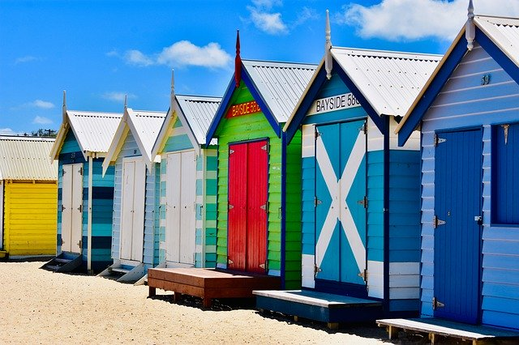
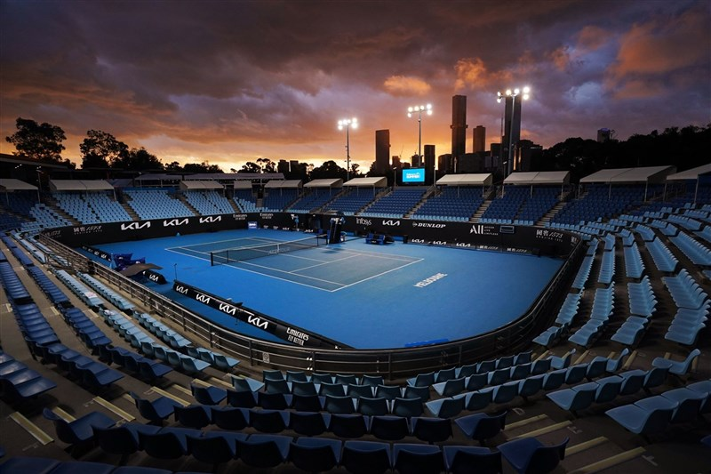
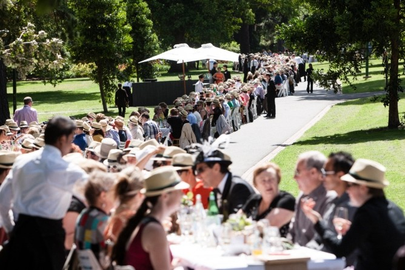
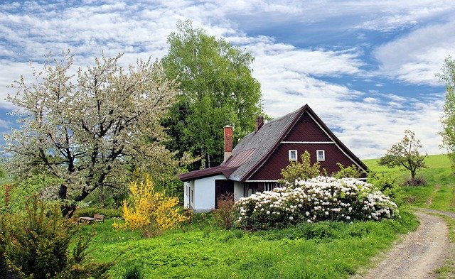
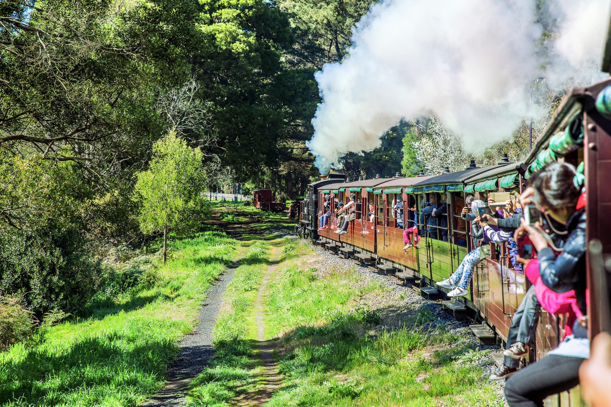

墨爾本四季的天氣特點
如果你有一倆個在墨爾本生活的朋友或是你上網查過一些資料，你肯定聽過這裏讓人聞風喪膽的天氣吧?
沒錯！在這個神奇的城市你一天就能體驗春、夏、秋、冬四個季節。
特別是在夏天，白天溫度眼看著要接近40攝氏度，晚上卻涼颼颼的只有12度。真的讓人摸不着頭腦。
雖説墨爾本的天氣變幻莫測，但是變化中仍然有跡可循。下面就讓我們看看墨爾本的四季都是怎麽樣的吧~
夏天（12月-2月）
夏天的墨爾本平均溫度14 – 25.3°C，有時候會出現40度以上的炎酷高溫，溫度最高的時間是十二月底到一月底左右。 夏天紫外線強，但是澳洲人不撐陽傘，前往前務必準備防曬乳或防曬薄外套。 雖然溫度高不過很乾燥，不會像台北濕熱難耐，但跟冬天一樣要注意保溼。 然而墨爾本飄忽不定的氣溫在夏天會特別誇張，有時候一整天都處於30度以上的高溫，到了隔天又給你早晚差個二十幾度。
最後重點是：很！少！下！雨！
如果你喜歡陽光、沙灘，而不喜歡濕噠噠的感覺，那麽歡迎你在這個時段來墨爾本哦~
夏天限定景點
墨爾本的夏季有不少使人興奮的活動，其中最廣受關注的是年度體育盛事：澳洲網球公開賽。 為期兩週的節慶在1月底舉行，內容包括體育、音樂和各種活動，全球最出色的網球手雲集一較高下。 在這季節最適宜遠離城市數天，盡情探索大洋路（Great Ocean Road）沿途美景、品嚐葡萄酒，和在摩寧頓半島（Mornington Peninsula）暢泳， 或在景致令人讚嘆的威爾遜岬（Wilsons Promontory）步道上遠足。為免向隅，記緊預訂營地。 到菲利普島（Phillip Island）看看可愛的樹熊和企鵝，記得要留到黃昏時份才能看到企鵝歸巢（企鵝經過一天在海中獵食後列隊回巢）。
秋天（3月-5月）

到了秋季太陽的光線會被雲層遮蓋掉不少，平均溫度為10.9 – 20.3°C，
天氣明顯轉涼，如果你起的早的話能看到城市裏籠罩著一層晨霧。走到街上，街頭的樹都不約而同地換了個顔色，地上的落葉也開始慢慢越堆越高。 秋天的墨爾本美像是一幅畫，帶上你的手機或者相機，隨便一拍都是美美的。
秋天限定景點
秋季最適宜盡情體驗在市內舉行的墨爾本美食節，或是賞楓，距離墨爾本市區開車約一個小時左右即可抵達馬其頓山脈(Mt Macedon)， 每年三月中開始樹上的葉子會由綠轉紅再到深褐色，邁入四月後道路兩旁會積滿落下的楓葉，其中最有特色、最好拍的就是楓葉大道。 來到馬其頓山脈拜訪完讓大眾趨之若鶩的楓葉大道之後，你也可以走進花園逛逛，或是買幾個簡單的零食、小吃，再跑到公園裡坐下來野餐一頓。 另外馬其頓山脈也把大自然、歷史文化和藝術做了整合，你可以在幽靜的小路中發現藝術家工作室、復古家飾店和藝術畫廊等等。
冬天（6月-8月）
墨爾本冬天的氣候因常常颳風下雨所以容易出現0度上下的體感溫度，平均溫度6.5 – 14.2°C，偶爾伴隨著毛毛細雨和寒涼刺骨的冷風。 如果你酷愛滑雪的話，可以選擇這個時候來墨爾本。雖然市區和近郊不會下雪，但是駕車3小時左右就可以到高原地區的滑雪場啦。 雖然常常颳風飄雨，但是非常乾燥，一定要注意保溼，避免皮膚龜裂。如果這時候打算待在墨爾本，最佳的穿著方式就是洋蔥式穿法。
冬天限定景點

冬天的重點行程不用懷疑就是滑雪！大約七月開始墨爾本的雪山上就會開始降雪，到了七月底八月初積累一定的雪量後滑雪場才會開放， 到距離市區2至3小時的布勒山（Mt Buller）或堡寶山（Mt Baw Baw），進行滑雪、玩滑雪板、雪鞋等活動，甚至坐狗拉的雪橇。 或是到墨爾本板球場觀賞澳洲足球聯會比賽，體驗激烈奮戰的氣氛。 花一個晚上在維多利亞女皇市場的冬夜市場閒逛，在那裡您可以享受街頭美食、熊熊烈火、特色購物、香料熱紅酒和現場音樂。
春天（9月-11月）
墨爾本在生意盎然的春天會迎來一波旅遊熱潮，這個時候的天氣舒適，而且日照天數明顯比冬天多出許多，平均溫度為9.6 – 19.6°C， 是一年四季中天氣較爲多變的季節。出門前看著頭頂猛烈的太陽，以爲今天會有個好天氣，出門之後就突然下起了大雨，防不勝防。 尤其是在十月份有三分之一的日子都在下雨，所以這段期間來到墨爾本旅行記得帶上齊全的雨具。
春天限定景點
春天也是百花盛開的季節，這個季節來到墨爾本你一定要到位於墨爾本市區東邊的丹頓農山脈賞花賞鳥，順便拜訪那片萬紫千紅的鬱金香， 鬱金香是一種特別有意思的花卉，不同顏色有著不同的象徵，像是紅色的熱情、粉色的幸福、純情的白色，而黃色則是寓意著友誼和財富。 墨爾本每年的鬱金香節Tesselaar Tulip Festival會在九月到十月之間，開放後就會吸引大批民眾湧進， 你會看到孩子們在花叢間奔跑嬉戲，穿著荷蘭傳統服飾的人群遊走在身邊(鬱金香是荷蘭的國花)，霎那間讓人感受到更加濃烈的異國風情。 而在丹頓農山脈也有不少令人驚豔的景點，像是普芬比例蒸汽火車就非常熱門，而我個人私心最愛的是充滿神秘感的William Ricketts Sanctuary， William Ricketts Sanctuary是個公園保護區，裡有許多以澳洲原住民為主角的雕塑，走進這座雕塑公園就像踏進了另一個世界般，奇幻而美妙。